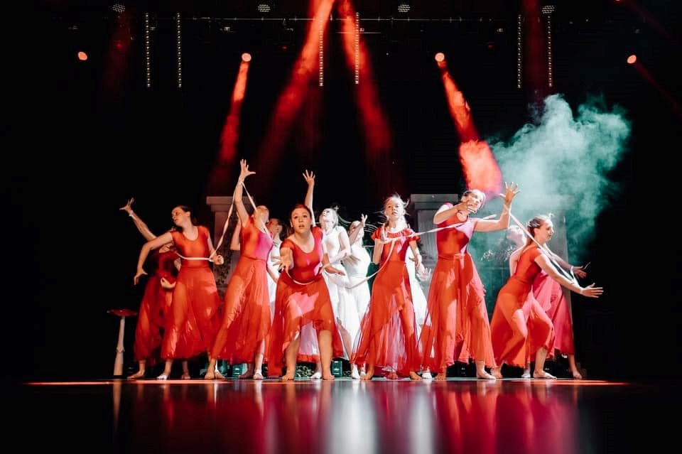
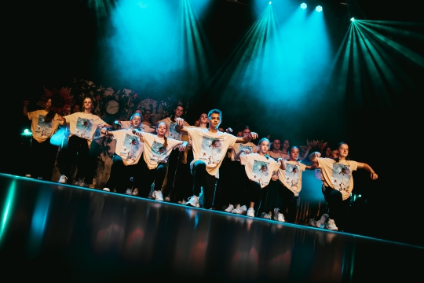

Jedagro vzw staat voor urban dansstijlen, maar ook voor het ontwikkelen van talent, het invullen van
de passie en ambitie van veel dansers, een supergezellige sfeer, discipline en natuurlijk veel plezier
in dans en bewegen. We zijn actief in Oudsbergen, Peer en Bree.
getalenteerd, gepassioneerd lesgeversteam.

verschillende dansstijlen.



